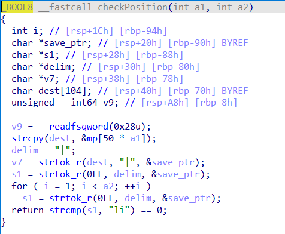
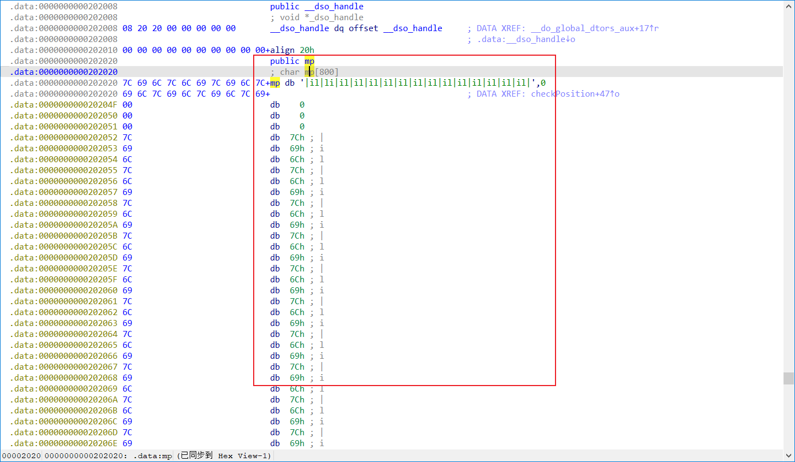
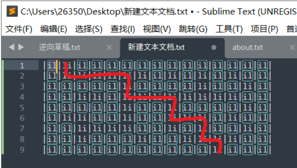

题目描述
小蓝同学发给你一个可执行文件，你运行后发现是一个简单的迷宫游 戏，你没有办法看到迷宫的全貌，只能通过键盘控制你的移动。你意识 到需要用逆向工具来分析它，看看是否能找到隐藏在其中的迷宫地图， 并且找出最短的移动路径。
解题
根据题目描述可以知道该题与迷宫有关，所以之后分析可以着重找到迷宫地图。
扔入exeinfope中查看基本信息：C语言编写的elf64位linux程序

放入64位的IDA中查看，找到main函数，按F5反汇编

可以看出flag是我们输入的字符串的32位小端（小端就是小写，大端就是大写）md5值，再根据题目描述猜测我们输入的m字符串就是走出迷宫的最短路径！！！
分析程序，在switch语句中发现一个出现最多的函数checkPosition，双击进入

在其中发现一个mp数组双击进入发现就是我们需要的迷宫地图，

将mp数组全部选中，然后在编辑中找到导出数据可以根据需要快速导出数据，可以根据导出的数据用C语言（其他语言也可）编写脚本快速打印地图，此处还需注意由于mp数组第一行并未用16进制表示所以导出数据时并不会将其导出之后需自行加上脚本如下：
#include <stdio.h>
#include <stdlib.h>
#include <string.h>
int main(){
int map [] = {0x7C, 0x69, 0x6C, 0x7C, 0x6C, 0x69, 0x7C,
0x6C, 0x69, 0x7C, 0x6C, 0x69, 0x7C, 0x6C, 0x69, 0x7C, 0x6C,
0x69, 0x7C, 0x6C, 0x69, 0x7C, 0x69, 0x6C, 0x7C, 0x6C, 0x69,
0x7C, 0x69, 0x6C, 0x7C, 0x6C, 0x69, 0x7C, 0x69, 0x6C, 0x7C,
0x6C, 0x69, 0x7C, 0x69, 0x6C, 0x7C, 0x69, 0x6C, 0x7C, 0x00,
0x00, 0x00, 0x00, 0x7C, 0x69, 0x6C, 0x7C, 0x69, 0x6C, 0x7C,
0x69, 0x6C, 0x7C, 0x69, 0x6C, 0x7C, 0x69, 0x6C, 0x7C, 0x6C,
0x69, 0x7C, 0x69, 0x6C, 0x7C, 0x69, 0x6C, 0x7C, 0x69, 0x6C,
0x7C, 0x69, 0x6C, 0x7C, 0x6C, 0x69, 0x7C, 0x69, 0x6C, 0x7C,
0x69, 0x6C, 0x7C, 0x6C, 0x69, 0x7C, 0x69, 0x6C, 0x7C, 0x00,
0x00, 0x00, 0x00, 0x7C, 0x69, 0x6C, 0x7C, 0x69, 0x6C, 0x7C,
0x6C, 0x69, 0x7C, 0x6C, 0x69, 0x7C, 0x69, 0x6C, 0x7C, 0x6C,
0x69, 0x7C, 0x6C, 0x69, 0x7C, 0x6C, 0x69, 0x7C, 0x6C, 0x69,
0x7C, 0x6C, 0x69, 0x7C, 0x6C, 0x69, 0x7C, 0x6C, 0x69, 0x7C,
0x6C, 0x69, 0x7C, 0x69, 0x6C, 0x7C, 0x69, 0x6C, 0x7C, 0x00,
0x00, 0x00, 0x00, 0x7C, 0x69, 0x6C, 0x7C, 0x69, 0x6C, 0x7C,
0x69, 0x6C, 0x7C, 0x69, 0x6C, 0x7C, 0x69, 0x6C, 0x7C, 0x6C,
0x69, 0x7C, 0x69, 0x6C, 0x7C, 0x69, 0x6C, 0x7C, 0x6C, 0x69,
0x7C, 0x69, 0x6C, 0x7C, 0x69, 0x6C, 0x7C, 0x69, 0x6C, 0x7C,
0x69, 0x6C, 0x7C, 0x6C, 0x69, 0x7C, 0x69, 0x6C, 0x7C, 0x00,
0x00, 0x00, 0x00, 0x7C, 0x69, 0x6C, 0x7C, 0x6C, 0x69, 0x7C,
0x6C, 0x69, 0x7C, 0x69, 0x6C, 0x7C, 0x69, 0x6C, 0x7C, 0x6C,
0x69, 0x7C, 0x69, 0x6C, 0x7C, 0x69, 0x6C, 0x7C, 0x6C, 0x69,
0x7C, 0x6C, 0x69, 0x7C, 0x6C, 0x69, 0x7C, 0x69, 0x6C, 0x7C,
0x6C, 0x69, 0x7C, 0x69, 0x6C, 0x7C, 0x69, 0x6C, 0x7C, 0x00,
0x00, 0x00, 0x00, 0x7C, 0x69, 0x6C, 0x7C, 0x69, 0x6C, 0x7C,
0x6C, 0x69, 0x7C, 0x6C, 0x69, 0x7C, 0x6C, 0x69, 0x7C, 0x6C,
0x69, 0x7C, 0x69, 0x6C, 0x7C, 0x69, 0x6C, 0x7C, 0x6C, 0x69,
0x7C, 0x69, 0x6C, 0x7C, 0x6C, 0x69, 0x7C, 0x69, 0x6C, 0x7C,
0x69, 0x6C, 0x7C, 0x6C, 0x69, 0x7C, 0x69, 0x6C, 0x7C, 0x00,
0x00, 0x00, 0x00, 0x7C, 0x69, 0x6C, 0x7C, 0x69, 0x6C, 0x7C,
0x6C, 0x69, 0x7C, 0x69, 0x6C, 0x7C, 0x69, 0x6C, 0x7C, 0x69,
0x6C, 0x7C, 0x6C, 0x69, 0x7C, 0x69, 0x6C, 0x7C, 0x69, 0x6C,
0x7C, 0x6C, 0x69, 0x7C, 0x6C, 0x69, 0x7C, 0x6C, 0x69, 0x7C,
0x6C, 0x69, 0x7C, 0x69, 0x6C, 0x7C, 0x69, 0x6C, 0x7C, 0x00,
0x00, 0x00, 0x00, 0x7C, 0x69, 0x6C, 0x7C, 0x69, 0x6C, 0x7C,
0x69, 0x6C, 0x7C, 0x69, 0x6C, 0x7C, 0x69, 0x6C, 0x7C, 0x69,
0x6C, 0x7C, 0x69, 0x6C, 0x7C, 0x69, 0x6C, 0x7C, 0x69, 0x6C,
0x7C, 0x69, 0x6C, 0x7C, 0x69, 0x6C, 0x7C, 0x6C, 0x69, 0x7C,
0x69, 0x6C, 0x7C, 0x69, 0x6C, 0x7C, 0x69, 0x6C, 0x7C};
for (int i = 0; i < 396; i++){
if (map[i] == 0){
printf("\n");
i += 3; //为了输出正确n行n列的迷宫地图
}
printf("%c", map[i]);
}
return 0;
}
/*
输出结果：
|il|li|li|li|li|li|li|il|li|il|li|il|li|il|il|
|il|il|il|il|il|li|il|il|il|il|li|il|il|li|il|
|il|il|li|li|il|li|li|li|li|li|li|li|li|il|il|
|il|il|il|il|il|li|il|il|li|il|il|il|il|li|il|
|il|li|li|il|il|li|il|il|li|li|li|il|li|il|il|
|il|il|li|li|li|li|il|il|li|il|li|il|il|li|il|
|il|il|li|il|il|il|li|il|il|li|li|li|li|il|il|
|il|il|il|il|il|il|il|il|il|il|il|li|il|il|il|
*/
在加上第一行迷宫组成完整迷宫，在放在文本编辑器（Sublime Text或其它）中进行处理便于观察迷宫，可以看到il代表的是墙，li代表的是路，所以得到正确走出迷宫的路径：sddddssdddssddssds，
放入md5在线生成网站
得到flag{6cc4fc7f5f2127cae570b4337c3db20f}
